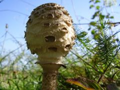

Ehető
Ehető Ehető
Kalap: 10-30 cm széles, halványbarnás, felülete pikkelyekkel borított.
Lemezek: fehérek, idősödve krémszínűek, szélesek, sűrűk, a tönk előtt gyűrűbe összenőttek.
Tönk: kígyóbőrszerűen mintázott, alja gumós, gyűrűszerű gallérja vastag, kettős szélű.
Hús: a kalapban vattaszerű, mogyoróillatú és -ízű.
Termőhely és idő: V-XI; erdőszélen, tisztásokon, mezőkön, hazánkban gyakori.
Étkezési érték: ehető, kiváló ízű gomba, legjobb rántva. A rostos, kemény tönköt ne használjuk fel. A kiterült kalapokat lehetőleg még a szedés napján készítsük el, mert tárolva gyorsan romlanak. (!!!)
